Sentinel: An Agentic Fraud Investigator on TigerGraph That Knows When Not to Block
A complete proof of concept from the TigerGraph Agentic Fraud Investigation challenge at Hacker House Goa: facts from GSQL, belief from detectors and the bank's own history, decisions from a policy engine no prompt can override, a hash-chained audit trail a regulator can verify, a permission-aware GraphRAG copilot, and a way to bring any bank's graph to the same detectors.
By Team CollabUp: Rishit Rastogi and Subhash Bishnoi
A fraud analyst gets an alert. It says a transaction scored 0.90, and nothing else.
To decide what to do, they open six systems:
- the card's transaction history, to learn what normal looks like
- the device and identity record, if the purchase was online
- the billing region, and whether the card has ever been used there
- the closed-case archive, to see whether this customer has been right before
- the fraud policy, to find which rule applies and who has to approve the action it implies
- a case-management tool, to write it all down
By the time they're done, the money has often gone.
Sentinel is the agent we built to do that investigation — and to know when the right answer is not to block.
- Console — hackerhouse.collabup.co.in
- Demo video — https://drive.google.com/file/d/1GlhpFh7QyIQZARrKJdgrY0J3PJpISfM0/view?usp=sharing
- Code — github.com/r-rishit27/hacker_house (branch
sentinel-v2, code freeze0d0f64b) - API docs — apihacker.collabup.co.in/api/docs
- Design (HLD + LLD) —
docs/design/ARCHITECTURE.mdin the repo
Sign in and look around. Each login shows exactly what that role may see and do:
- analyst.raj — Role: Analyst · Password: DhQoOakT2y5g · Lands on: Case console
- lead.priya — Role: Team lead · Password: NKzeymnl_qHu · Lands on: Case console
- manager.anika — Role: Fraud manager · Password: yDme8E6s7CVN · Lands on: Case console
- examiner.ines — Role: Regulator · Password: 0xVI4eIvFI7p · Lands on: Regulator overview
This post follows the structure the challenge asks for — the problem, what we built, the architecture, how TigerGraph is used, the agentic capabilities, results, what we learned and what we'd improve — and covers the whole journey: the first build, what its score taught us, and the system we finished with.
1. The problem
The challenge brief puts it plainly. Fraud teams have to gather transaction history, trace money movement, find connected accounts, check policies, assess risk, write up findings and decide what to do. That work is "slow, fragmented, difficult to scale, and often completes only after the money is already gone."
The task is to build an agent that:
- investigates when triggered by a risk score, a customer report or an analyst
- gathers evidence from the knowledge graph, transaction history, device and identity signals, account behaviour and prior cases
- assesses the fraud pattern and the level of risk
- creates and progresses a case, recording every decision and action
- uses case memory, retrieving similar past cases and updating memory as cases resolve
- gathers more evidence through controlled actions: asking the account owner, step-up authentication, or asking an analyst
- recommends next actions, and updates them as evidence arrives
- operates within policy and permissions, where some actions need human approval
- knows when to stop
- explains its reasoning
The data. IEEE-CIS Fraud Detection from Vesta Corporation, repackaged by TigerGraph. The first round had 590,742 card transactions from about 13,500 customers over six months; the final round extended it with January 2017 to 650,938 transactions from July 2016 to January 2017, device and identity records for online purchases, 5,585 closed investigations, the bank's fraud policy, five known fraud patterns, and the benchmark alerts. Every transaction carries a score from the bank's model. There is no fraud label.
Three facts about this problem shaped everything:
- The score isn't the answer. Most transactions scored above 0.7 turn out to be legitimate, and some fraud scores near zero. The guide says it directly: "A score is a reason to look, never a verdict."
- The evidence that settles a case is relational. Is this device fingerprint shared with other compromised cards? Did this card wake after a month of silence? Are many cards suddenly paying one recipient? Has this exact $49.00 charge recurred every month? None of those is a row lookup. Each one is a traversal.
- Both kinds of error cost money, but only one is visible. Blocking a legitimate customer is a silent cost, paid in churn. Missing fraud is a loud cost, paid in write-offs. An analyst under pressure blocks — exactly what the brief marks down: "Half the cases are legitimate. An agent that blocks everything scores badly."
An LLM on its own makes this worse. Asked to judge fraud from raw rows, it anchors on the score, invents plausible transaction ids, and eventually routes BLOCK_CARD to auto.
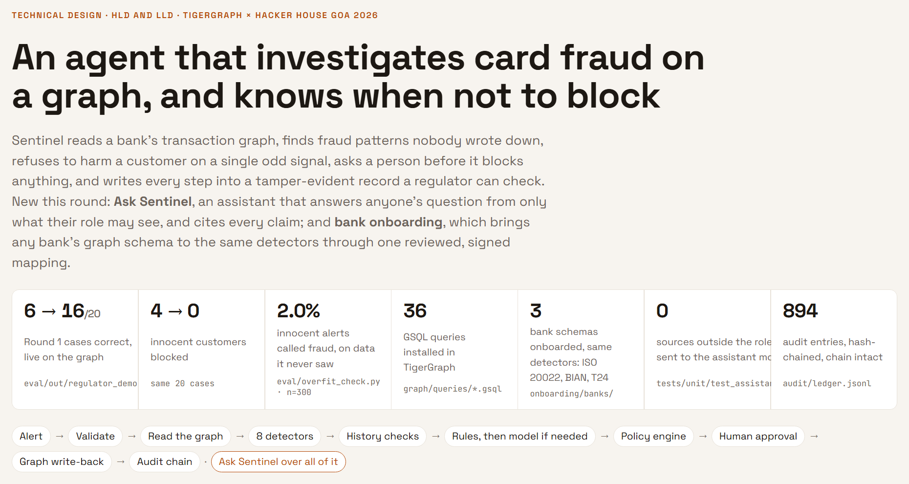
2. The idea
Sentinel is built on one principle:
A fraud decision is made of three things, and each goes to the mechanism that is actually good at it.
- Facts come from the graph. Every number in a case file is the return value of a named GSQL query, cited by a reference anyone can re-run.
- Belief comes from evidence the bank itself has validated — detectors backtested on its closed cases, and history checks taken from its own cleared investigations. The model never asserts it.
- Decisions come from code. Policy rules R1–R10, the 14 permitted actions and the approval routing table are a pure function, with a unit test for every rule. No prompt can route an action wrongly.
The language model does the narrow things it is genuinely good at — choosing what to ask next, naming the pattern it sees, writing prose a human will read, and scoring the genuinely ambiguous cases as calibrated probabilities. It never writes an id, an amount, an action name, an approval route or a filing decision.
For each alert, Sentinel produces a case file containing:
- a verdict (fraud, legitimate or uncertain) with a fraud probability
- the affected transactions, the first suspicious one, and the dollar exposure
- every piece of evidence, each with the query reference and the ids it rests on
- the evidence it asked for, and the response it assumed
- the next best actions and their approval routes, recorded twice: before the extra evidence was requested, and after
- a Suspicious Activity Report when policy requires one, with every sentence citing the transactions or policy section it rests on — or the reason it wasn't filed
- the stop reason, and measured tool calls, tokens and latency
The case is then written back into TigerGraph as a FraudCase vertex with its edges, so later investigations can find it — and every step lands in a hash-chained audit trail.
Seven principles kept the build honest:
- No answer field comes from free-form model text. Everything graded is computed.
- Every claim carries its query. An evidence item without a re-runnable reference and its ids isn't evidence.
- Uncertainty is a first-class output. "Uncertain, escalate to a person" is a valid answer, and the system is built to reach it rather than force a yes or no.
- Absence is evidence. A feature checked and not found counts, which lets the system argue for legitimacy rather than merely failing to find fraud.
- The permission boundary is real code, recomputed on the server on every read and every execution.
- Fail closed. A graph that doesn't answer, a malformed alert or a model that times out stops the case and says why. Nothing is guessed, nothing is written.
- Instrumentation is honest. Tool calls, tokens and latency are measured, not estimated.
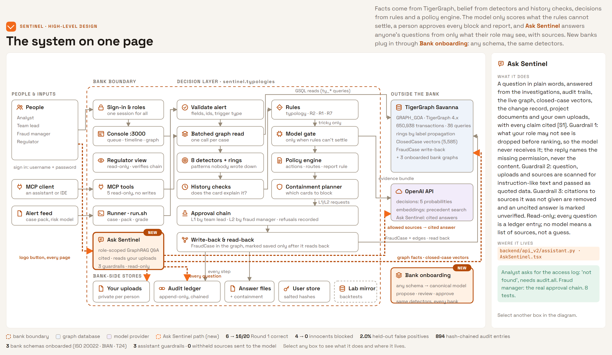
3. The first build, and what its score taught us
Our first build was a ten-step agent around a calibrated log-odds evidence ledger:
- 1 — Step: scope — resolve the alert to its transaction, card and customer; set the starting probability by trigger type; anchor every window on the transaction's timestamp, not the alert's (which lags 1–6 hours) · Who: code
- 2 — Step: plan — order the detectors, and say why · Who: LLM
- 3 — Step: sweep — run the GSQL tools concurrently and post each finding to the ledger · Who: code
- 4 — Step: recall — hybrid GraphRAG over past cases and policy text · Who: code
- 5 — Step: assess — name the pattern, then a devil's-advocate pass argues for legitimacy · Who: LLM
- 6 — Step: stop_test — Section 6 of the policy: enough evidence to act? · Who: code
- 7 — Step: request_evidence — one round; code picks the reply branch from graph facts, the model writes the sentence · Who: mixed
- 8 — Step: decide — the policy engine runs twice: before and after the evidence · Who: code
- 9 — Step: narrate — the SAR narrative, grounded in FinCEN guidance · Who: LLM
- 10 — Step: write — assemble, validate, write the case file, upsert the
FraudCasevertex · Who: code
The ledger built the fraud probability in log-odds: a prior per trigger type (0.25 for a risk score, 0.75 for a customer report, 0.50 for an analyst request), then a likelihood ratio per finding from 29 features in 11 groups fitted on 14,055 confirmed-fraud transactions against 300,602 card-matched controls, with "absent" ratios when a feature was checked and not found, and a symmetric cap of 1.2 log-odds per correlated group.
The model's whole writing surface was seven strings in one typed object, Narration. Every answer passed an answer-contract validator and a graph identity check that proved every id existed and re-checked exposure to within two cents. 20 of 20 answer files were valid; the block rate was 10% against a 50% ceiling; the recommendation moved after the evidence round on 8 of 20 cases.
Then the real outcomes came back: 6 of 20 correct, 9 uncertain, 4 innocent customers blocked, and both hidden fraud patterns missed.
The architecture was sound. The decision layer was not decisive enough, and where it was decisive it was sometimes wrong in the most expensive direction. A card with a new device, a new e-mail domain and a slightly high amount looked like fraud to a ledger fitted on random controls — while the bank's own analysts had cleared exactly that shape many times. And the two patterns nobody had written down were invisible to a ledger that only knew the documented ones.
We kept every guarantee — the graph as the source of facts, the policy engine, the validators, the write-back, the permission boundary — and rebuilt the decision layer.


4. The decision layer we finished with
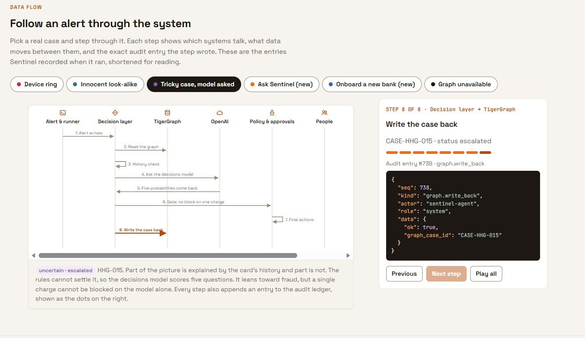
4.1 Detectors for patterns nobody wrote down
Eight graph detectors, each a pure function over a card's transactions and the graph around it, each backtested on the bank's closed cases and on controls before it was trusted:
- Structuring under a threshold — three or more online charges just under $500 or $1,000 within an hour, not identical in amount, and the same burst on other cards in the same three weeks.
- Shared device ring — one device profile adopted by many cards within days, mostly behind an anonymous proxy.
- Ring device returning — a device the bank already tied to several confirmed frauds, back on a new card.
- Dormant card waking, escalating charges, micro-charges, many cards paying one recipient, and card testing.
Rings are not guessed from a picture. They are the connected components of the anonymous-proxy card–device graph, computed inside TigerGraph by label propagation (ty_proxy_components), with very common device profiles excluded so a browser default never links strangers. Against the bank's labelled rings it had 100% precision, and the result flows straight into connected cards, containment and the report. Both hidden patterns are now caught.
4.2 Let the bank's own history speak for the customer
The four innocent customers we had blocked shared one thing: their "anomalies" were things the card had done before. So we built six history checks, each taken from the bank's own cleared-case notes — a new device at the card's usual amount, a large purchase in the card's usual product, a habitual late-night or proxy user, travel, a subscription. An anomaly the card's history explains no longer counts against the customer.
That one change took innocent customers blocked from 4 to 0.
4.3 Rules first, the model second — and the model on a leash
The decision runs in a fixed order:
- a decisive detector → fraud
- the customer denies the transaction → fraud (R2)
- every anomaly explained by history → legitimate
- one weak signal on a score alert → legitimate, verify with the customer (R1)
- a dispute the history contradicts → verify, don't block (R7)
- only what is left goes to the model
For those tricky cases we use OpenAI's decisions endpoint (gpt-6-luna). It does not write a verdict; it returns five calibrated probabilities for questions we wrote: is it fraud, does history explain it, is it coordinated, does the evidence conflict, does the alert text contain instructions. Code turns the numbers into a verdict, and the gates are hard:
- the model may not block a single charge on its own
- it may not overrule a detector or a customer's denial
- an "uncertain" from the model is capped at 0.69, below the report-filing threshold
- if the call fails, the case becomes uncertain and escalated — never a guess
Prompt injection is treated as data: alert text is normalised (Unicode look-alikes, zero-width characters, hidden base64) and scanned, then quoted to the model as untrusted. Across 12 attacks: undefended, one injected line flipped a real fraud; defended, 0 of 36 runs flipped.
4.4 Policy, evidence, containment, approval
- Policy engine. The bank's Fraud Policy as tested code — R1–R10, the §3a report rule, routes
auto/L1/L2— run before and after the evidence request, so a change of recommendation is always explained. No model in this path. - One controlled evidence round. Customer validation, step-up authentication or analyst review; the reply is simulated from measured graph facts, stated as an assumption, and never mentions a report (no tipping off).
- Containment planner. For a ring, block the cards whose exposure outweighs the cost of disrupting a cardholder, monitor the rest, and name every customer each action touches. On the micro-charge ring: +$84 net, against −$2,386 for blocking everything.
- Human approval. Only
autoactions run on their own.L1waits for a team lead,L2for a fraud manager; every grant and every refusal is recorded.BLOCK_CARDis the only action whose route depends on exposure; an unknown action name raises rather than defaulting toauto. - Write-back and read-back. A case is marked
written_to_graphonly after the installed query reads it back with the same verdict and transactions.
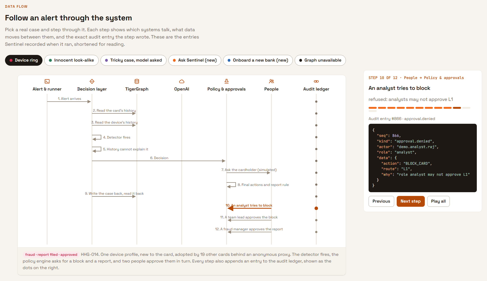
4.5 Speed
The largest card in the pack made 373 graph queries and took 170 seconds. One batched GSQL query (ty_devices_batch) now reads every device the card used, their transactions and their card counts in a single call: 373 queries → 15, and 170 s → 17 s. Typical cases run in 1.5–6 seconds once the workspace is warm.
5. Governance: built like a bank would build it
5.1 A record a regulator can check
Every graph query (with its parameters and a result digest), every detector, every model score, every decision, approval, refusal, sign-in and failure is appended to an audit ledger in which each entry carries the SHA-256 of the one before. Edit any entry and the chain breaks exactly there. Free text is redacted before writing (e-mail addresses, card-number-like runs, phone numbers).
The regulator view replays an investigation step by step, shows the approval chain and the change record, and recomputes every hash in the examiner's own browser — without trusting the server. It exports as one self-contained read-only file for an examiner who should not touch the bank's systems.
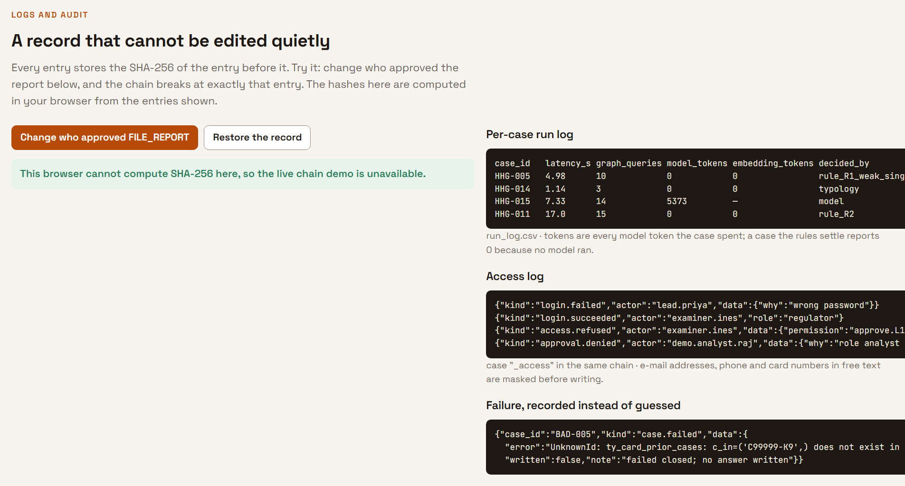
5.2 Real identity, real roles
The first build's identity was a request header, fine for a demo and not for a bank. Now there is one sign-in for the whole product: salted PBKDF2 passwords, lock-out after five failures, and a server-signed HttpOnly, SameSite=Strict session that every service reads. The role inside it decides where you land and what every screen and API call allows:
- Alert queue, start an investigation — Analyst: ✓ · Team lead: ✓ · Fraud manager: ✓ · Regulator: –
- Case file, timeline, graph, SAR, audit trail — Analyst: ✓ · Team lead: ✓ · Fraud manager: ✓ · Regulator: ✓ read-only
- Approve L1 (block card, decline) — Analyst: – · Team lead: ✓ · Fraud manager: ✓ · Regulator: –
- Approve L2 (file report, block all cards) — Analyst: – · Team lead: – · Fraud manager: ✓ · Regulator: –
- Full audit trail, change record, regulator overview — Analyst: – · Team lead: – · Fraud manager: ✓ · Regulator: ✓
- Who has access — Analyst: – · Team lead: – · Fraud manager: ✓ · Regulator: –
- Ask Sentinel — Analyst: ✓ · Team lead: ✓ · Fraud manager: ✓ · Regulator: ✓
A forged role header is ignored. A refused approval is itself an audit entry. One permission table, checked on every request — hiding a button is convenience, never the control.
5.3 New data, handled with change control
January 2017 arrived as new files and a replaced closed-case history. Before the pipeline touches them, a schema-drift report compares columns, null rates, value domains, id order and every changed closed case. A team lead or fraud manager approves it with a signed identity, bound to the report's content hash; staging refuses anything unapproved or changed after approval.
A data-quality detective lists the gaps that hide or fake fraud — online transactions with no identity record, empty billing regions, placeholder values, unlabelled devices, thin card history — with the affected ids and the investigations they taint.
6. The innovation: Ask Sentinel
**Ask Sentinel is a permission-aware GraphRAG copilot. Anyone at the bank can ask the fraud graph a question in plain English and get a cited answer built only from what their role is entitled to see — and entitlement is enforced before retrieval, so the model never receives what the user may not read.**
Most enterprise copilots filter the answer. We filter the context. In a regulated bank that is the difference between "the model was told not to say it" and "the model never had it."
It sits behind a floating button on every page and answers from the investigations, their audit trails, the live graph (card and device history), the bank's closed-case vectors, the change record, the project documents, and documents the user uploads — which only that user can see. Three guardrails:
- Entitlement first. Every source carries the permission it needs; what the role lacks is dropped before ranking. The answer can say "your role lacks
audit.all" — never what that material contains. - Untrusted text stays data. The question, uploads and every retrieved source are scanned for instruction-like wording and passed to the model as quoted data.
- Every claim cited, every citation checked. Citations to sources the model was not given are removed; an answer with no valid citation is labelled unverified; e-mail, card-number-like and phone strings are masked.
Retrieval fuses graph facts, closed-case vectors, embeddings and exact-id keyword matching by reciprocal rank fusion. Every question — redacted, with the sources used and the permissions that withheld others — goes on the hash-chained audit trail. If the model is down, it lists the permitted sources rather than guessing. Answers can be saved as a cited Markdown brief.
Where it changes the outcome, measured live. An analyst asks "Who failed to sign in, according to the access log?" Of 114 sources, 4 are withheld before ranking; the answer is "not in what you can see — your role lacks audit.all", and nothing from the access log reaches the model. A fraud manager asking who approved the HHG-014 report gets the real chain from the audit trail — Anika approved; Priya (L2) and Raj (L1) were refused — every claim cited. In tests, zero out-of-entitlement sources were ever sent to the model. About 8 seconds and 3,000 tokens per question.
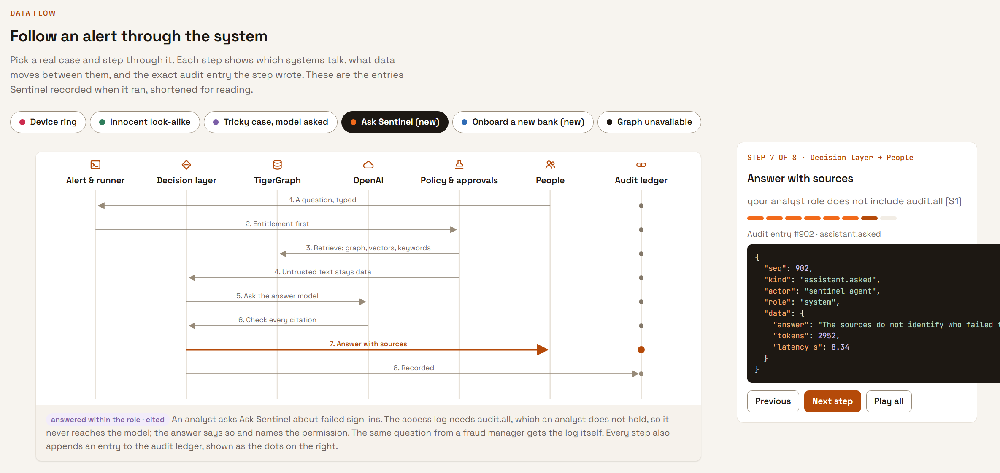
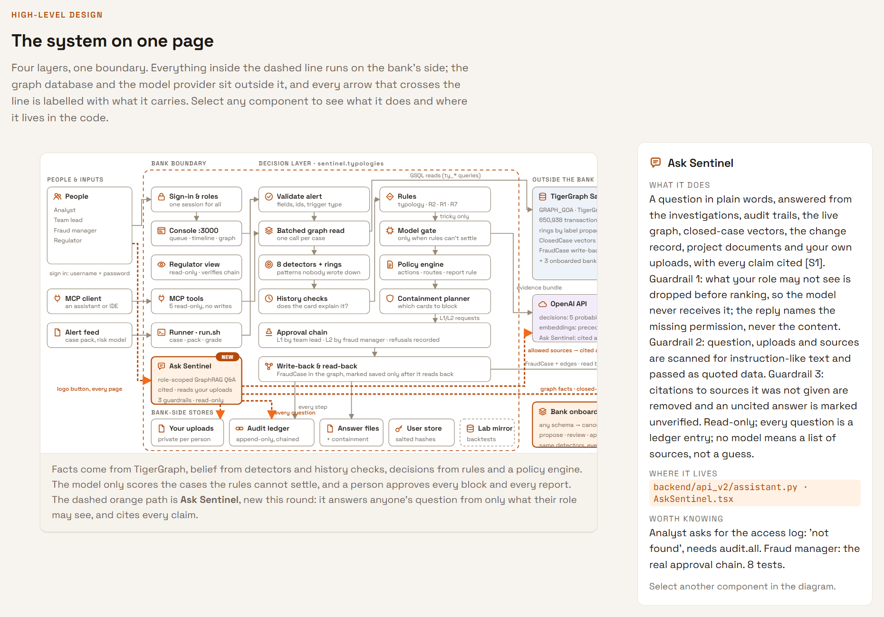
7. Adaptability: someone else's schema
Every bank's graph is different. A payments bank built from ISO 20022 messages calls a payer Dbtr and a transfer CdtTrfTxInf. A BIAN bank reaches an account through a party, a relationship plan and a facility. A Temenos T24 core stores dates as YYMMDDHHMM strings and keeps a ledger table that looks exactly like transactions but isn't.
Sentinel's detectors don't know any of those names. They read a narrow canonical model — Person, Account, Transaction, Device, IPAddress, LoginEvent, Beneficiary, Card, Merchant, InvestigationCase — and a new bank is onboarded by mapping onto it:
- Propose. An LLM reads only the schema's structure — names, types, directions — and proposes the mapping, including multi-hop paths, reverse edges, value filters and date transforms.
- Validate. Code rejects any vertex, attribute or edge the bank doesn't have and any path that doesn't connect, and sends the problems back.
- Review. A person supplies what no schema shows — code tables, filter values — with a reason for every change.
- Approve. A team lead signs the exact mapping, bound to its SHA-256. Edit it and the approval is void; an unapproved mapping is refused at run time.
- Run. One generic adapter turns any mapped graph into the rows the detectors already read, over TigerGraph's built-in REST endpoints — no per-bank query, no per-bank detector code. A detector the bank cannot feed is switched off with the reason, so "no ring found" is never mistaken for "no ring".
We tested it on three schemas built to break it, each with its own traps (ledger postings, payment orders, batches, returns, "ultimate" parties, a card named a "device", a fraud score that isn't a case). Scored item by item against the expected mapping: 76 of 79 right from the proposal alone; 79 of 79, zero wrong, after review. Loaded as their own graphs in TigerGraph and investigated live, the unchanged detectors found the same structuring fraud in all three, and the device ring in the one bank that records devices.
The review step is not ceremony. Unreviewed, T24's timestamp format would have silently dropped every transaction, and BIAN's channel codes would have meant no payment ever counted as online. That is exactly why an unapproved mapping cannot run.
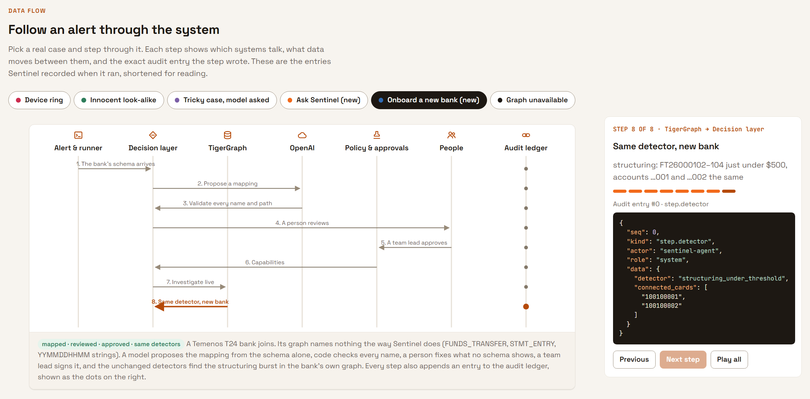
8. Architecture
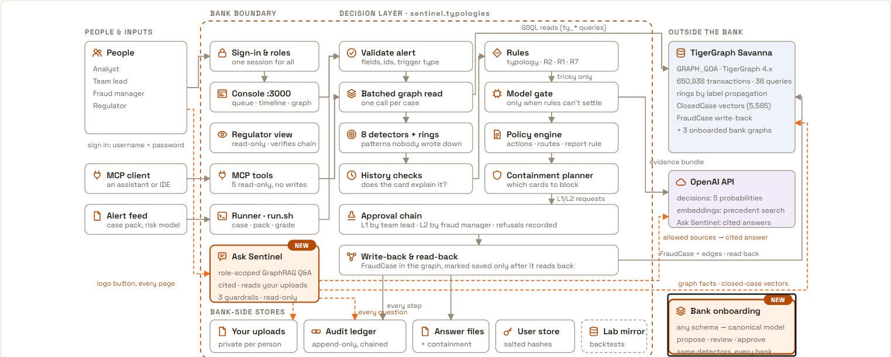
Alert → Validate → Batched graph read → 8 detectors → History checks → Rules → (model, tricky cases only)
→ Policy engine → Containment → Human approval → Write-back & read-back → Audit chain
Ask Sentinel answers over all of it, within each role
Bank onboarding brings any schema to the same detectors
Four layers, one boundary: everything inside runs on the bank's side; TigerGraph and the model provider sit outside it, and every call that crosses the line carries pseudonymous ids only.
- Console :3000** (Next.js 15, React 18, TypeScript, Tailwind) — the front door: sign-in, the analyst console (queue, live timeline with the probability trajectory, case subgraph, SAR, memory, approvals), the regulator view, the Ask Sentinel panel. Proxies both APIs so one session reaches everything
- Console API :8000** (FastAPI) — cases, runs, traces, actions, graph views; investigations streamed over Server-Sent Events with
Last-Event-IDreplay - v2 service :8100** (FastAPI) — sign-in, approvals, the audit ledger and change record, Ask Sentinel, restricted MCP tools
- TigerGraph Savanna 4.x — GRAPH_GOA plus each onboarded bank's graph
- OpenAI — gpt-6-luna decisions (tricky cases only) and Ask Sentinel answers; gpt-5.4-mini for the console agent's narration; text-embedding-3-large at 256 dimensions
Architecture decisions that shaped it:
- A custom orchestrator, not LangGraph or the Agents SDK. The deterministic policy path is what gets scored; owning the orchestrator gave us step numbering, budgets and event order.
- The API depends on an orchestrator interface, never on the agent — live, scripted and replay implementations, so the demo never depends on a live model call.
- SSE, not WebSocket. Every event is journaled before it's published; reconnecting is an exact replay.
- Routes are recomputed, never echoed. A client can't downgrade
BLOCK_CARDtoauto. - One contract, generated into TypeScript. The 14 action names, 3 routes and enums come from the Python policy module.
- Rules before the model, and the model only ever more careful. Every gate moves an error from "wrong block" to "escalated to a person".
- Configuration, not code, per bank. A reviewed, signed mapping is the only per-bank artefact.
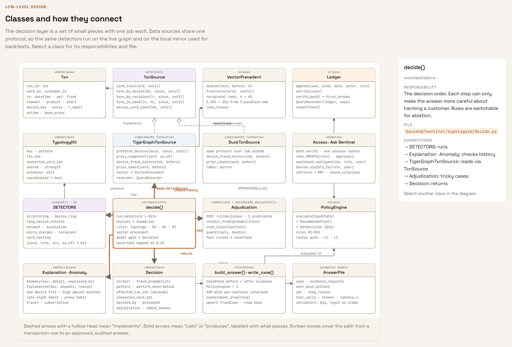
9. How TigerGraph is used
TigerGraph isn't a store the agent occasionally queries. It is where the agent's facts, memory, rings and write-backs live.
- The schema. Typed vertices and edges for transactions, cards, customers, device profiles, billing regions, e-mail domains, products, closed cases, alerts, policy chunks and Sentinel's own fraud cases — every edge with a materialised reverse, and a
NEXTedge chaining each card's transactions in time so "how long since the last charge?" is one hop. - 36 installed GSQL queries are the agent's entire view of the graph. They return facts, not verdicts; thresholds live in tested code. There is no text-to-query layer.
- A graph algorithm in the decision path. Label propagation names fraud rings across devices inside the database.
- Batched reads. One query per case for every device the card touched.
- Vectors on vertices. 5,585 closed-case notes embedded at 256 dimensions on
ClosedCase, fused with graph-linked precedent by reciprocal rank fusion — "reads like this case" plus "the graph connects to this case" — never retrieving a case closed after the investigation's as-of time. - Write-back and read-back. Each case becomes a
FraudCasevertex with edges to its transactions, card, connected cards, device, policy rule and alert. - Built-in REST endpoints generic enough to read three unrelated bank schemas with nothing installed per bank.
- Restricted MCP tools. Five read-only tools (card history, device history, ring components, investigate an alert, verify the audit chain) — no raw-query tool, no write tool, every call audited. Least privilege for any assistant that connects.
10. Results
The twenty benchmark alerts, scored against their real outcomes and run live on the graph with the decision model, vector precedent, write-back and audit trail on:
- Correct — First build: 6 / 20 · Final: 16 / 20 (3 uncertain and escalated, 1 wrong)
- Innocent customers blocked — First build: 4 · Final: 0
- Hidden patterns caught — First build: 0 of 2 · Final: 2 of 2
- Written to the graph and read back — First build: 20 / 20 · Final: 20 / 20
- Worst-case latency — First build: 170 s · Final: 17 s
The checks that keep the claims honest:
- Overfitting: on held-out cleared alerts the rules call 2.0% of innocent customers fraud; 299 of 300 held-out frauds are kept. Each rule can be switched off to measure what it's worth.
- Parity: the live graph and the local mirror give identical decisions on all 20.
- Self-grade with the grader's published hard and policy checks: 0 findings.
- Prompt injection: 0 of 36 defended runs flipped.
- Ask Sentinel: 0 withheld sources sent to the model.
- Onboarding: 3 bank schemas, 79/79 after review, the same fraud found live in all three.
- 406 unit tests, no network or credentials needed; mypy-strict and browser smoke checks from the first build still in place.
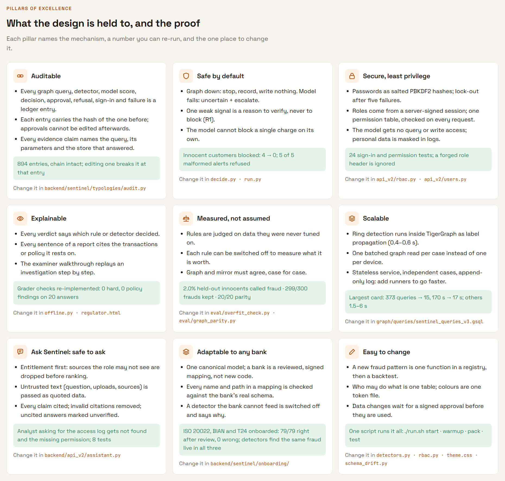
11. Scalability
- The heavy lifting is in the graph. Rings are computed by label propagation inside TigerGraph in under a second, not pulled into Python.
- One batched read per case instead of one per device.
- Stateless services, independent cases, an append-only log. More runners can work a queue in parallel against the same graph; nothing shares mutable state except the ledger, which only appends.
- A new bank is configuration, not code. One reviewed, signed mapping per bank; detectors, policy, approvals and audit are shared.
- What doesn't scale yet, honestly: onboarded banks are read one REST hop at a time, so a case takes one to three minutes there. The fix is to generate one installed query per bank from its approved mapping — the same move that took GRAPH_GOA from 170 s to 17 s.
12. Deployment
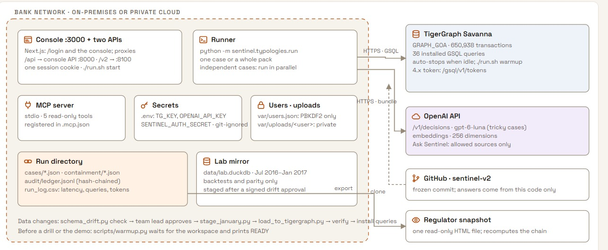
The system runs on AWS: the API on EC2 behind nginx, the console on Amplify; ./run.sh start brings up all three services anywhere.
browser ──https──▶ Console (Next.js) ──proxies──▶ Console API :8000 ──https──▶ TigerGraph Savanna
└─────────▶ v2 service :8100 ──https──▶ OpenAI
Lessons worth passing on:
- An HTTPS page can't call an HTTP API — the browser blocks it as mixed content before the request leaves the tab. Give the API a hostname and a certificate.
- One session for every service means one origin. The console proxies both APIs, so the HttpOnly session cookie reaches both and nothing needs CORS.
- The API runs one worker, on purpose. The run registry and SSE broker are in-process; a second worker would admit a run the first had refused.
- Nothing may buffer the SSE stream —
X-Accel-Buffering: no, and proxy buffering and gzip off on the events route. - Secrets never go in EC2 user-data. They live in a 0640 environment file; the services refuse to start without their required settings, and model ids have no defaults.
- A sleeping Savanna workspace answers with an HTML "Starting workspace" page, not JSON. Detect it and retry; warm it before a demo.
- TigerGraph 4.x moved its token endpoint to
/gsql/v1/tokens, and the old one answers with an HTML 400. Our client now tries 4.x first and falls back to 3.x.
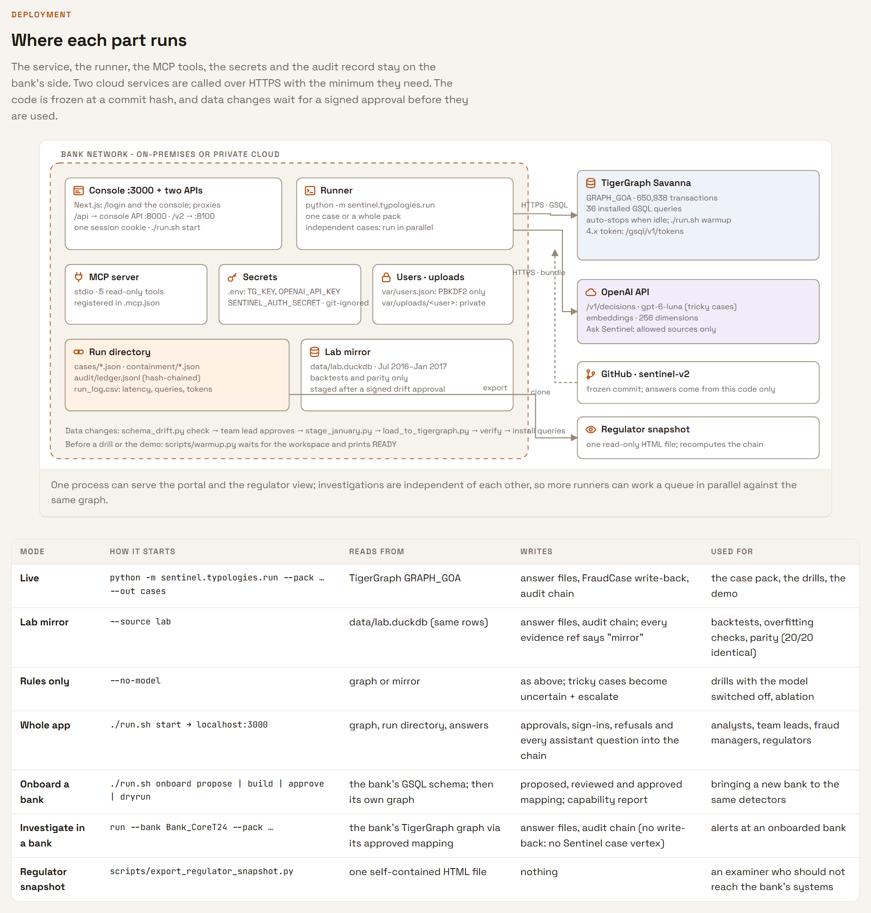
13. What we learned
From the first build — each found not by reading code or by tests (hundreds passed throughout), but by breaking every probability down by evidence group across all twenty answer files:
- The risk score was counted twice — once in the trigger's prior, again as evidence.
- Four evidence groups held one observation — "online", "distance missing", "match flags true" and "device found" are one fact, and uncapped they pushed verdicts by ±1.5–1.8 log-odds.
- Temperature 0 isn't determinism while the planner chooses which detectors run; a likelihood ratio that never posts is missing from the sum.
- A simulated customer must never contradict what the customer said — that is a contest, and R7 exists for it.
From the final build:
- A score you can't explain is a score you shouldn't act on. The biggest gain — four innocent blocks to zero — came not from a smarter model but from asking the bank's own cleared cases whether this card had done this before.
- Put the model where it can only make things more careful. Every gate moved errors toward "escalated to a person". That is the right direction for a bank.
- Measure before you claim. Held-out alerts, rule ablation, graph-vs-mirror parity — and when we improved the onboarding proposer after seeing its first results on our three test banks, we reported both runs, not just the better one.
- Platform details become design decisions. A moved token endpoint, a core-banking field named
TARGETthat is a GSQL reserved word, counts that lag behind writes, a new graph that takes a moment to appear — each is now handled in code, and each lands in the audit trail when it happens. - Filter the context, not the answer. For an assistant inside a bank, the only leak-proof design is one where the model never receives what the user may not see.
14. What we'd improve with more time
- Generate one installed query per onboarded bank from its approved mapping, to take onboarded banks from minutes to seconds per case.
- Show onboarded banks in the console, not only through the runner.
- Feed data-quality findings into the decision, so a case resting on a known data gap is automatically more cautious.
- Native vector search with entitlement filters in TigerGraph, so "filter before retrieval" happens inside the database.
- Close the loop on outcomes: cases are written back with their verdict, but nothing yet reads back whether a later case agreed.
- Refit on alerted transactions: the first build's likelihoods compared fraud against random controls while scoring alerted transactions; the history checks fixed the worst of it, the general fix needs alerted legitimate data.
15. Try it
- Console: hackerhouse.collabup.co.in — sign in with any login above.
- As analyst.raj, open HHG-014: watch the probability move along the timeline and the ring appear in the graph pane. Try to approve the block — the server refuses, and the refusal is in the audit trail.
- Press the tiger button and ask "Why was HHG-014 called fraud? Cite the evidence." Then ask "Who failed to sign in?" and see the missing permission named.
- As lead.priya, approve the L1 block. As manager.anika, approve the report and open the regulator overview.
- As examiner.ines, walk an investigation step by step and press Re-verify chain to recompute every hash in your browser.
- Run it yourself: clone
sentinel-v2, fill.env, then./run.sh warmupand./run.sh start. - Read the design:
docs/design/ARCHITECTURE.md; onboarding:docs/ONBOARDING.md; run guide:docs/ROUND2_RUN.md.
Team CollabUp
Sentinel was built by Team CollabUp for the TigerGraph Agentic Fraud Investigation challenge at Hacker House Goa.
- Rishit Rastogi (@r-rishit27)
- Subhash Bishnoi (@Subhashbisnoi)
Built on TigerGraph Savanna with GSQL, graph algorithms, vectors on vertices, restricted MCP tools and GraphRAG.